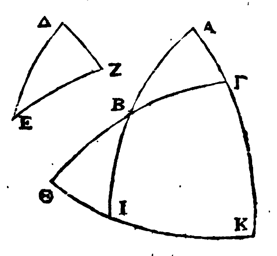

Prop. XVII. Theor. — De Aequalitate Triangulorum Aequiangulorum (Halley 1758, pp. 18–19)¶
Menelai Alexandrini Sphaericorum Lib. I Prop. XVII (Halley 1758, pp. 18–19)
Enuntiatio (Halley 1758, p. 18)
Si duo triangula Sphaerica habeant tres angulos unius aequales tribus angulis alterius, quemque suo relativo; erunt quoque arcus triangula illa continentes inter se aequales, quisque relativo suo.
[§1.5 · Demonstratio, pp. 18–19] Sint ΑΒΓ, ΔΕΖ duo triangula Sphaerica, in quibus angulus Α sit aequalis angulo Δ, & angulus Β angulo Ε, sicut angulus Γ angulo Ζ: dico arcum ΑΒ aequalem esse arcui ΔΕ, & arcum ΒΓ arcui ΕΖ, arcumque ΑΓ arcui ΔΖ.
Producatur arcus ΑΒ ad Ι, & fiat ΒΙ ipsi ΔΕ aequalis; & producto ΒΓ ad Θ, fiat ΒΘ aequalis arcui ΕΖ; & ducatur ΙΘ arcus circuli magni, qui producatur ad occursum arcus ΑΓ etiam producti in puncto Κ.
Jam duo arcus ΘΒ, ΒΙ aequales sunt duobus ΔΕ, ΕΖ, & angulo Ε aequalis est angulo Β: quare arcus ΙΘ aequalis est arcui ΔΖ, & angulus Ι angulo Δ, qui aequalis est angulo Α; quare angulus Ι aequalis est angulo Α: angulus vero Θ aequalis est angulo Ζ, qui aequalis est angulo Γ; adeoque angulus Θ aequalis est angulo Γ.
Et quoniam angulus Γ exterior trianguli ΘΚΓ aequalis est interiori & opposito angulo Θ, erunt (per decimam hujus) arcus ΘΚ, ΚΓ simul sumpti aequales semicirculo: pariterque cum angulus Ι exterior trianguli ΑΙΚ aequalis sit opposito & interiori angulo Α, erunt quoque duo arcus ΑΚ, ΚΙ aequales semicirculo; ac proinde duo arcus ΚΘ, ΚΓ sunt aequales duobus arcubus ΙΚ, ΚΑ.
Auferantur utrinque duo arcus communes ΙΚ, ΚΓ, ac reliquus arcus ΘΙ erit aequalis arcui ΑΓ. Sed arcus ΘΙ aequalis est arcui ΖΔ; quare arcus ΖΔ aequalis est arcui ΑΓ: & angulus Α aequalis est angulo Δ, uti angulus Γ angulo Ζ: quapropter (per 14m hujus) arcus ΑΒ aequalis est arcui ΔΕ, & ΒΓ arcui ΕΖ. Quod erat demonstrandum.

